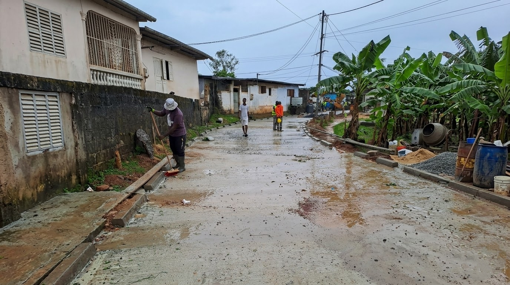
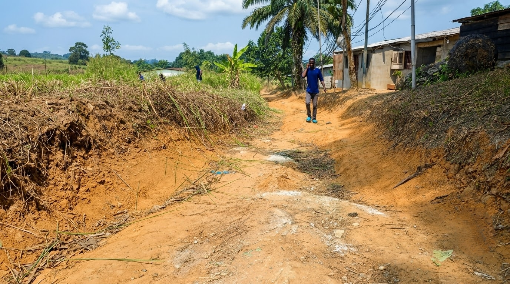
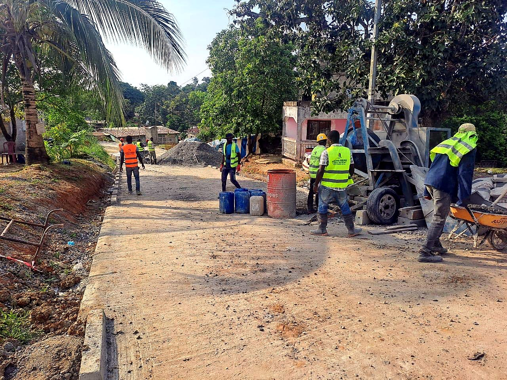

Préparation
Visite du site, identification des points critiques et choix des moyens à mobiliser.
Nos réalisations montrent l'impact concret d'un accès repris, d'une piste renforcée ou d'une plateforme mieux préparée.

Déplacez le curseur pour comparer l'état initial et le résultat après intervention.


Visite du site, identification des points critiques et choix des moyens à mobiliser.
Travaux de terrassement, compactage, drainage et mise en forme selon le besoin.
Vérification de la praticabilité, de la stabilité et de l'écoulement des eaux.

Amélioration de la circulation et préparation des abords pour un usage quotidien.

Reprofilage et compactage pour rendre la piste plus praticable.

Organisation des écoulements pour limiter les dégradations de la voirie.

Vérification terrain avant et pendant les travaux pour garder une exécution maîtrisée.

Organisation des matériaux et des moyens avant la mise en œuvre sur site.

Surface praticable et propre pour améliorer durablement l'accès local.